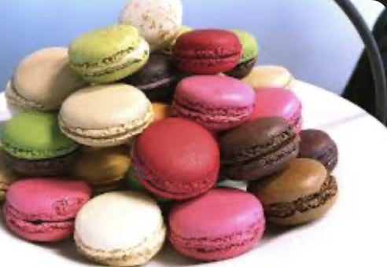
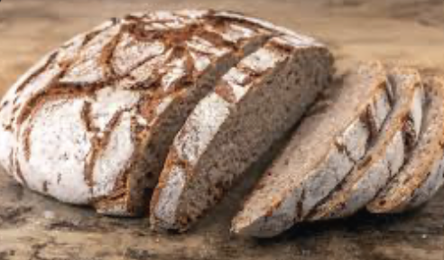
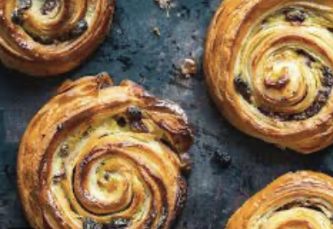
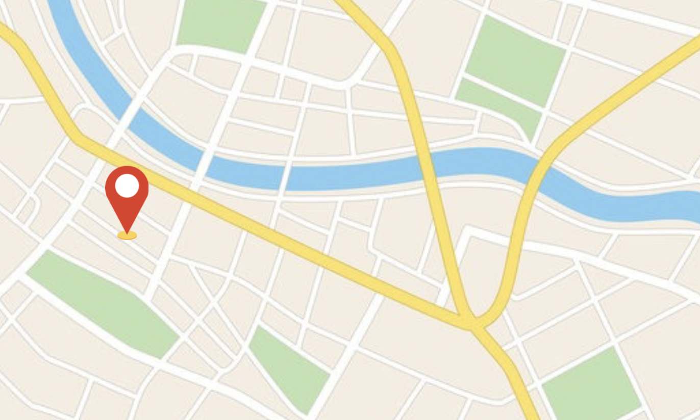

Bienvenue à La Boulangerie du Village
Depuis toujours, la Boulangerie du Village met à l’honneur le savoir-faire artisanal et la passion du bon pain. Chaque jour, nous préparons avec soin des pains croustillants, des viennoiseries dorées et des pâtisseries gourmandes, élaborés à partir d’ingrédients sélectionnés pour leur qualité et leur fraîcheur. Attachés aux traditions boulangères tout en restant à l’écoute des envies de nos clients, nous avons à cœur de vous offrir des produits authentiques, faits maison, qui rassemblent et réchauffent les cœurs. Notre priorité : le goût, la qualité et la proximité. Commandez en ligne et retrouvez toute la saveur de votre boulangerie, simplement et en toute confiance.
Nos Best-Sellers



Plan pour trouver la Boulangerie
